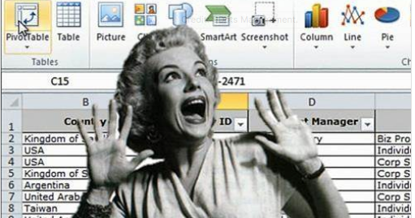
2 Office Killer
- Mise en place : Télécharger le dossier exo2 et décompressez le sur votre ordinateur. Puis ouvrez le projet R
exo2.Rprojdans Rstudio.
Le but de ce chapitre est de montrer le plus tôt possible aux étudiants les possibilités de R et de son environnement R-Studio en ce qui concerne la production de documents ou de présentations dans le cadre d’une démarche reproductible. L’apprentissage précoce de Rmarkdown nous semble en effet indispensable, ne serait-ce que pour que les étudiants apprennent à prendre en cours des notes mélangeant les exemples de code R et les explications données en cours ou en TD.
Mais le but véritable est de convaincre tout ou partie des étudiants qu’ils peuvent remplacer à terme les logiciels de bureautique des suites office par un environnement de travail plus intégré et plus performant… à condition d’oublier la souris pour revenir au clavier !
Real mensch never clcik !
2.1 Rstudio et les projets R
- Au commencement, les dieux de la statistique créèrent le langage R.
- Mais l’interface était vide et vague,
- les ténèbres couvraient les lignes de code
- R-Studio dit : Que le projet soit et le projet fut.
Si l’on veut s’épargner bien des désagréments dans l’apprentissage de R, il faut prendre dès le départ de bonnes habitudes. Parmi celles-ci, l’une des plus importantes est le fait d’inscrire toujours son travail dans le cadre d’un projet R c’est-à-dire - en simplifiant beaucoup - un répertoire de travail contenant l’ensemble des données, programmes, résultats… que l’on pourra par la suite compresser, archiver et transmettre à quelqu’un d’autre.
2.1.1 Lancement de R studio
Sauf à être complètement masochiste, on n’utilise jamais R directement mais on lance d’abord l’interface R-Studio qui facilite conisdérablement l’ensemble des opérations et offre une gamme considérable de services. Il ne faut toutefois pas confondre les deux et il serait par exemple ridicule d’indiquer sur un CV en vue d’un emploi de statisticien que l’on sait utiliser R-studio en oubliant de préciser que l’on maîtrise R.
2.1.2 Création d’un projet
Pour créer un projet on utilise le menus déroulant File/new project/ … et on définit un dossier de notre ordinateur (existant ou à créer) qui contiendra le projet. Une fois l’opération effectuée, on pourra constater que ce dossier contient un fichier xxx.Rproj ou xxx est en principe le nom du dossier dans lequel vous avez stocké le projet.
Ce fichier contient toute une série d’informations dont nous ne parlerons pas dans ce cours d’initiation mais qui, pour faire simple, définissent un ensemble de réglages du logiciel et de préférences de l’utilisateur.
Si vous fermez Rstudio (faites-le !) il vous suffira pour reprendre votre travail là où vous vous étiez arrêté :
- de lancer R-studio et de cliquer sur File/open project/… suivi du nom du fichier xxx.Rproj
- ou plus simplement encore de double cliquer sur le fichier xxx.Rproj ce qui lancera automatiquement Rstudio
Le dossier contenant votre projet R peut être organisé à votre convenance. Certains mettent tout les fichier pêle-mêle dans le dossier. D’autres préfèrent créer des sous-dossiers contenant des données, des programmes, des résultats, des figures. Vous déciderez à l’usage de ce qui vous convient le mieux, mais le point important est que tout ce qui entre ou sort de vos programmes R doit être de préférence stocké dans le répertoire du projet.
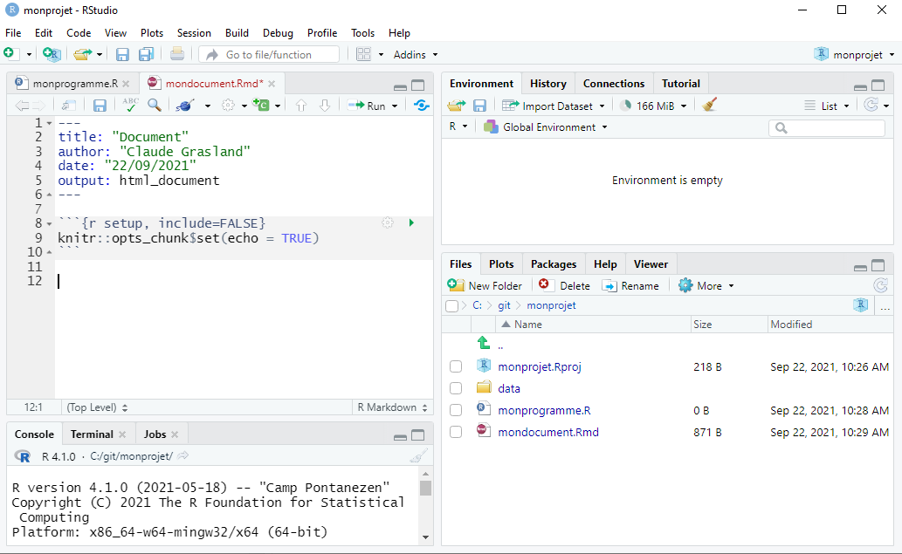
2.2 Programme R : Excel killer ?
- C’est pourquoi tu quittera Word et Excel, et t’attachera à R studio,
- et vous deviendrez une seule chair.
La fonction initiale d’un langage de programmation comme R est … de créer des programmes c’est-à-dire des ensembles d’instruction permettant d’accomplir une tâche à l’intérieur d’une chaîne de production. Dans le cas d’un logiciel spécialisé dans l’analyse statistique, il s’agira donc de partir de données (statistiques, géographiques, textuelles, …) pour aboutir à des résultats prenant la forme de tableaux, cartes ou graphiques. Il ne s’agit donc en somme que d’une étape du travail de recherche où le principal avantage de R est d’automatiser une tâche et de faciliter sa reproduction ultérieure avec en arrière plan un objectif de productivité puisque l’ordinateur réalise en quelques millisecondes des tâches qui prendraient des heures avec un logiciel click-bouton de type Excel.
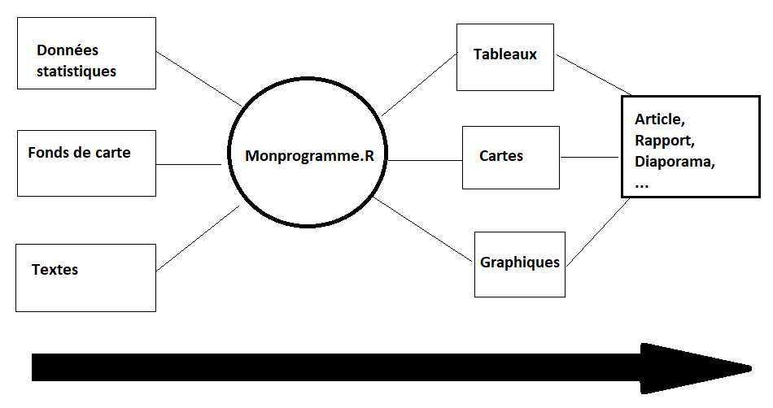
Prenons un exemple simple de problème facile à résoudre avec R mais plus compliqué avec des logiciels click-boutons. Il s’agit d’un exemple pédagogique tiré d’un très vieux cours d’analyse spatiale portant sur les semis de point et les localisations optimales.
On considère une carte papier permettant de localiser 5 station services à l’intérieur d’une ville à plan en damier. Chaque station livre chacune la même quantité de carburant par semaine aux clients. On souhaite répondre aux questions suivantes :
- Comment saisir les données dans une fichier numérique ?
- Comment reproduire la carte papier sous forme d’un graphique ?
- Comment calculer la dsitance à vol d’oiseau entre toutes les stations ?
- Comment calculer la dsitance routière entre toutes les stations ?
- Où localiser un dépôt de carburant permettant d’alimenter les cinq stations en minimisant la distance moyenne de livraison (critère d’efficacite)
- Où localiser une caserne de pompier qui doit pouvoir intervenir rapidement sur toute les stations et qui doit minimiser la distance maximale à la station la plus éloignée (critère d’équité).
- Comment visualiser ces deux localisations sur la carte des stations ?
- Comment reproduire ces tâches rapidement s’il y a des ajouts ou suppressions de stations
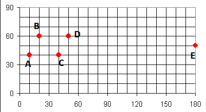
On constitue deux équipes d’étudiants, certains utilisant un programme R et d’autres Excel. On se propose de voir qui ira le plus vite sur chacune des 8 tâches proposées.
2.2.1 Round 1. Saisie des données et affichage du tableau
On crée un programme R avec File/New File/R Script puis on l’enregistre avec File/Save/ … suivi du nom du programme.
# Saisie des variables
CODE <- c("A","B","C","D","E")
X <- c(10,20,40,50,180)
Y <- c(40,60,40,60,50)
# Regroupement dans un tableau
coo <- data.frame(X,Y)
# Ajout du nom des lignes
row.names(coo) <- CODE
# Affichage du tableau
coo
#> X Y
#> A 10 40
#> B 20 60
#> C 40 40
#> D 50 60
#> E 180 50Normalement, les étudiants qui utilisent un tableur ont du aller plus vite et Excel mène sur R par 1-0
2.2.2 Round 2. Affichage de la carte
Vous devez essayez de reproduire l’image correspondant au problème posé
plot(X,Y,
col="red",
pch=20,
xlim=c(0,180),
ylim=c(0,90),
asp = 1)
text(X,Y,
labels = CODE,
pos = 2)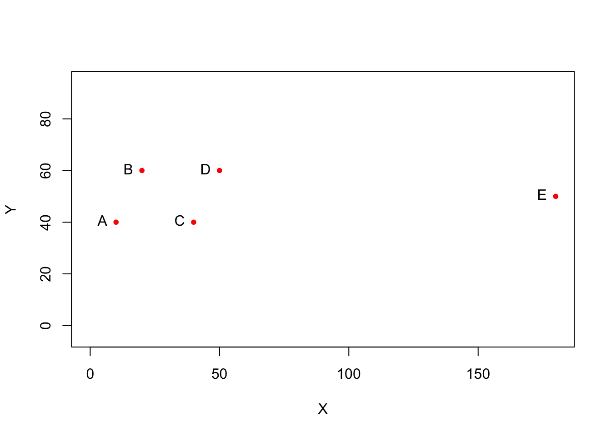
La création d’un graphique est à première vue plus facile avec un logiciel click-bouton. L’avantage est très clairement pour Excel qui mène désormais 2 à 0.
2.2.3 Round 3. Calcul de la station la plus accessible à vol d’oiseau (distance euclidienne)
Vous devez calculer une matrice de distance euclidienne entre toutes les stations et trouver la plus accessible.
# calcul la matrice de distance euclidienne
mat<-dist(coo, upper = T, method = "euclidean")
mat
#> A B C D E
#> A 22.36068 30.00000 44.72136 170.29386
#> B 22.36068 28.28427 30.00000 160.31220
#> C 30.00000 28.28427 22.36068 140.35669
#> D 44.72136 30.00000 22.36068 130.38405
#> E 170.29386 160.31220 140.35669 130.38405
# distance moyenne
apply(as.matrix(mat),1,mean)
#> A B C D E
#> 53.47518 48.19143 44.20033 45.49322 120.26936Là, je parie que les utilisateurs d’Excel ont eu un peu plus de mal … En tous les cas, Excel ne mèneplus que par 2 à 1
2.2.4 Round 4. Calcul de la station la plus accessible par la route (distance de Manhattan)
Vous devez calculer une matrice de distance de Manhattan entre toutes les stations et trouver la plus accessible.
# calcul la matrice de distance de Manhattan
mat<-dist(coo,upper = T, method = "manhattan")
mat
#> A B C D E
#> A 30 30 60 180
#> B 30 40 30 170
#> C 30 40 30 150
#> D 60 30 30 140
#> E 180 170 150 140
# distance moyenne de Manhattan
apply(as.matrix(mat),1,mean)
#> A B C D E
#> 60 54 50 52 128Je reconnais que c’est unpeu facile, mais à nouveau R l’emporte ce qui fait désormais match nul 2-2
2.2.5 Round 5. Localisation du dépôt de carburant
Dans le cas particulier de la distance de Manhattan, le calcul du point le plus proche de tous les autres s’obtient facilement en calculant le point médian dont les coordonnées correspondent à la médiane de X et la médiane de Y.
medX <- median(X)
medX
#> [1] 40
medY <- median(Y)
medY
#> [1] 50A priori, le calcul est aussi facile dans R et dans Excel : match nul 3-3
2.2.6 Round 6. Localisation de la caserne de pompiers
Dans le cas particulier de la distance de Manhattan, le calcul du point minimisant la distance maximale s’obtient en trouvant le centre du diamètre minimal en X et en Y. Il s’agit de la localisation la plus équitable où le plus défavorisé est le moins défavorisé possible.
equX <- (max(X)+min(X))/2
equX
#> [1] 95
equY <- (max(Y)+min(Y))/2
equY
#> [1] 50A priori, le calcul est toujours aussi facile dans R et dans Excel : match nul 4-4
2.2.7 Round 7. Visualisation des deux points sur la carte
On va placer en bleu le point médian et en vert le point le plus équitable. Dans le cas de R on peut recopier les lignes de code du graphique du round n°2 ce qui gagne désormais du temps :
# Programme antérieur
plot(X,Y,
col="red",
pch=20,
xlim=c(0,180),
ylim=c(0,90),
asp = 1)
text(X,Y,
labels = CODE,
pos = 2)
# Ajout du dépôt de carburant
points(medX, medY, col="blue", pch=3)
text(medX,medY, "dépot",pos=1)
# Ajout du point médian
points(equX, equY, col="green", pch=3)
text(equX,equY, "caserne",pos=1)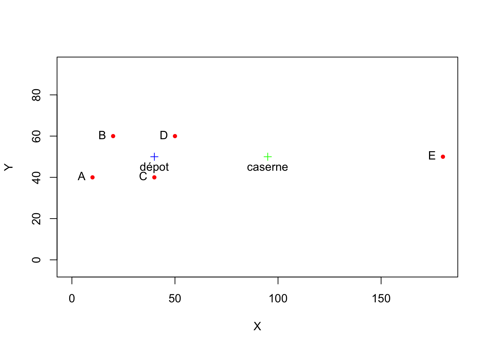
Le résultat du match est incertain mais R n’est plus désavantagé puisqu’on peut recycler les lignes de code précédentes pour le graphique de base. Disons 5-5 même s’il y a de fortes chances que R l’emporte.
2.2.8 Dernier round. Refaire toute l’analyse avec une station de plus
Deux stations F(100,20) et G(150,30) ont été ajoutées. Il faut refaire la carte finale. Cela ne pose aucun problème dans R puisqu’il suffit de modifier l’entrée des données et récupérer des bouts de programme
# (1) Saisie des variables
CODE <- c("A","B","C","D","E","F","G")
X <- c(10,20,40,50,180,100,150)
Y <- c(40,60,40,60,50,20,30)
coo <- data.frame(X,Y)
row.names(coo) <- CODE
# (2) calcul des points centraux
medX <- median(X)
medY <- median(Y)
equX <- (max(X)+min(X))/2
equY <- (max(Y)+min(Y))/2
# (3) Graphique
plot(X,Y,
col="red",
pch=20,
xlim=c(0,180),
ylim=c(0,90),
asp = 1)
text(X,Y,
labels = CODE,
pos = 2)
# Ajout du dépôt de carburant
points(medX, medY, col="blue", pch=3)
text(medX,medY, "Dépôt",pos=1)
# Ajout du point médian
points(equX, equY, col="green", pch=3)
text(equX,equY, "Caserne",pos=1)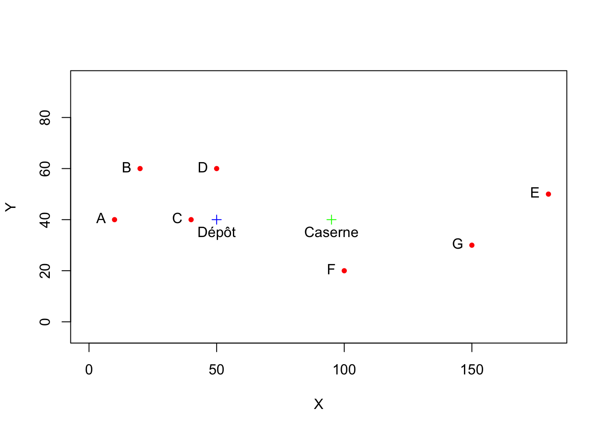
Excel n’a aucune chance d’aller plus vite et R remporte le match par KO !
2.3 Document Rmd : Word killer ?
- R-Studio dit : « Faisons une interface de rédaction adaptée à notre travail,
- Que l’utilisateur puissent y insérer les tableaux, les graphiques, les cartes, les références bibliographiques, et tous les écrits qui les commentent. »
Nous venons de voir comment une bonne pratique de R peut conduire progressivement à abandonner l’usage des tableurs (Excel, Open Office) sauf peut-être pour l’étape de saisie des données. Dès lors qu’il s’agit de réaliser des graphiques ou des calculs statistiques complexes, la rédaction d’un programme se révèle beaucoup plus intéressante même si elle impose un coût initial d’apprentissage.
Mais une bonne pratique de R ou plus précisément des documents R markdown peut vous conduire beaucoup plus loin et vous amener à abandonner également votre logiciel de traitement de texte (Word) et votre outil de présentation (Power Point). Le coût d’apprentissage est naturellement un peu plus élevé mais les bénéfices sont à la mesure de l’investissement.
Comme le montre la figure ci-dessous, un document R markdown est en quelques sorte un mélange entre des lignes de code R qui executent des tâches et des lignes de texte où sont expliqués les calculs et commentés les résultats obtenus. En d’autres termes, un document R markdown vous permet de rédiger un article de recherche complet, une présentation à une conférence, un syllabus de cours, dans un seul environnement logiciel (R studio).
Nul besoin de ciseau et de colle pour aller chercher tel tableau ici, tel figure là-bas ou telle carte ailleurs. Tous ces éléments sont intégrs au fur et à mesure de la rédaction ce qui facilite considérablement la concentration. Et surtout - on l’a déjà vu pour le programme R - le document peut facilement être reproduit ou mise à jour sans être obligé de réplique des dizaines de click de souris.
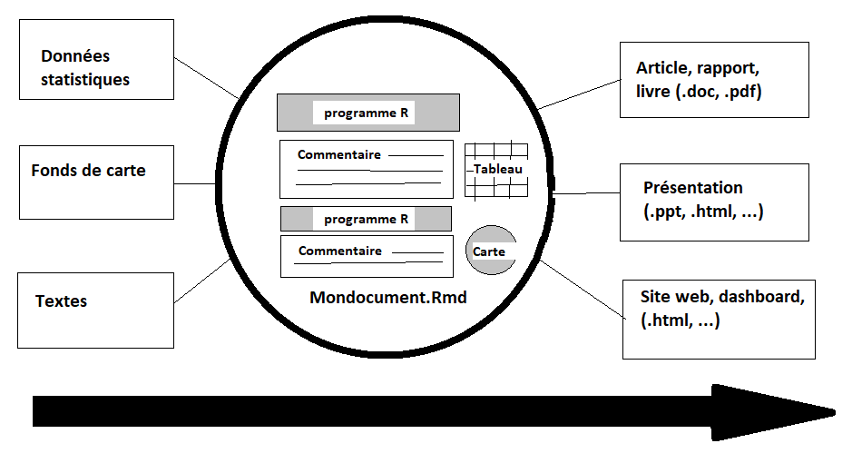
Nous allons illustrer l’usage de R markdown en rédigeant une courte note sur la distribution de la population et de certains commerces et services à Rennes. L’exemple est repris du Manuel d’analyse spatiale publié par l’INSEE en 2018 et plus précisement de son chapitre 4. Les configurations de points
Comme nous avons pris la perspective de n’employer aucun package R au cours de cette formation initiale, les données ont été légèrement modifiées, notamment pour le tracé de la carte des contours de la ville de Rennes.
2.3.1 Chargement des données
Nous disposons de trois fichiers qui comportent chacun des coordonnées de localisation utilisant la même projection Lambert et que l’on pourra de ce fait superposer. Après les avoir chargés et décrits, on en propose une première visualisation à l’aide des fonctions graphiques de base de R.
2.3.2 Contour de Rennes
On charge le fichier avec read.table() puis on affiche ses premières lignes avec head()et on regarde sa taille avec dim()
map <- read.table(file = "resources/data/rennes/map.csv",
header = T,
sep = ";")
head(map,2)
#> x y
#> 1 346382.1 6786334
#> 2 346460.0 6786704
dim(map)
#> [1] 37 2On affiche le contour avec les instructions plot() et lines(). On doit impérativement ajouter le paramètre asp = 1 dans plot() pour imposer une échelle identique sur l’axe vertical et l’axe horizontal.
plot(map$x,map$y, col="red", asp = 1)
lines(map$x,map$y, col="blue")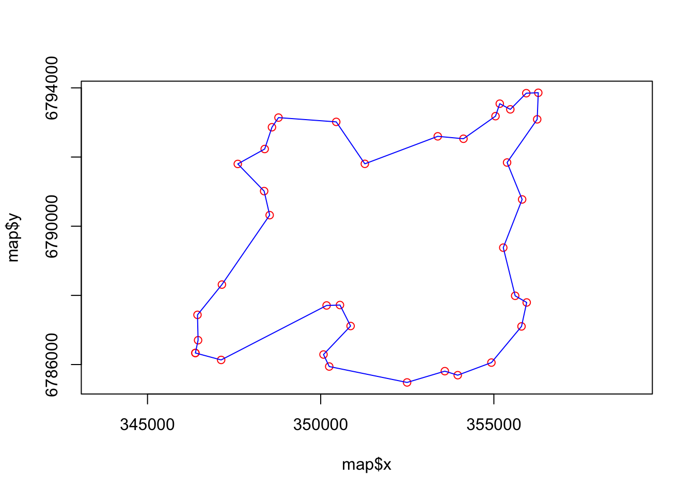
2.3.3 Distribution de la population
On charge le fichier de population de la même manière et on constate qu’il comporte une troisième colonne indiquant la population localisée en chaque point. En fait, il s’agit d’une grille de population qui localise les habitants sur une maille de ??? m
pop <- read.table(file = "resources/data/rennes/popu.csv",
header = T,
sep = ";")
head(pop,2)
#> x y pop
#> 1 346202.1 6790631 20
#> 2 346203.4 6792843 5
dim(pop)
#> [1] 24916 3On procède à une première cartographie qui ne tient pas compte de l’effectif de population mais indique juste les cases occupées et inoccupées, ce qui permet de donner une vision générale de l’occuparion du sol et du peuplement de Rennes et de l’espace environnant.
plot(pop$x,pop$y, col="red", asp = 1,pch=22, cex=0.01)
lines(map$x,map$y, col="black")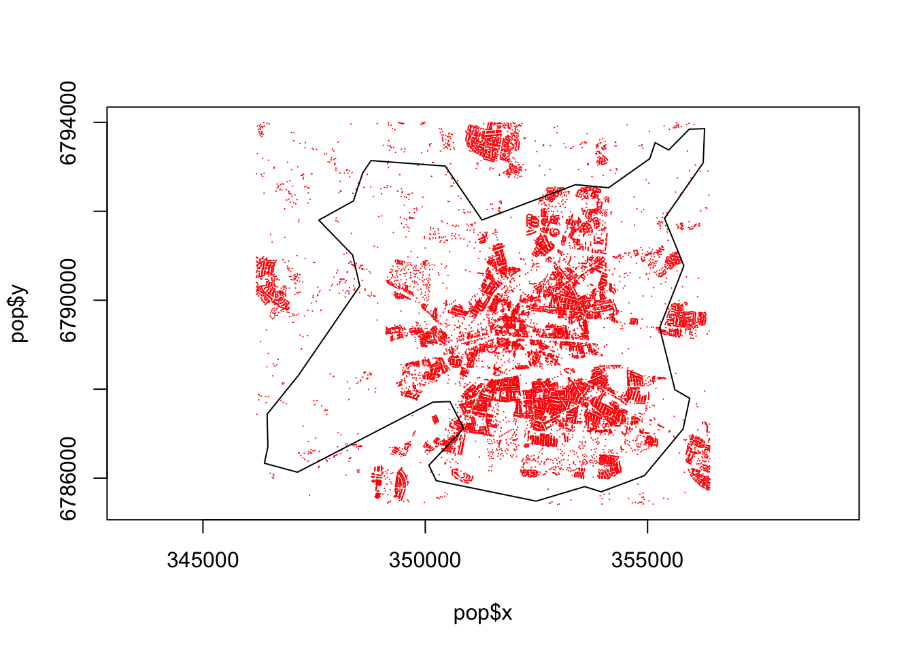
2.3.4 Distribution des équipements
L’INSEE a extrait du fichier de la Base Publique des Equipements quatre types de localisations correspondant aux écoles, aux médecins, aux pharmacies et aux commerces de vêtements. On notera l’ajout du paramètre encoding=“UTF-8” qui permet de lire sans erreur les caractères accentués et d’éviter par exemple que “Vêtements” devienne “Vêtements”.
bpe <- read.table(file = "resources/data/rennes/bpe.csv",
header = T,
sep = ";",
encoding="UTF-8")
head(bpe,2)
#> x y equ
#> 286 349156.2 6790525 Ecoles
#> 287 351800.4 6786774 Ecoles
dim(bpe)
#> [1] 767 3On utilise l’instruction table()pour dénombrer l’effectif de chaque équipement :
table(bpe$equ)
#>
#> Ecoles Médecins Pharmacies Vêtements
#> 59 268 70 370Puis on visualise après avoir attribué une couleur à chaque équipement. On crée pour cela une nouvelle variable :
bpe$couleur<-as.factor(bpe$equ)
levels(bpe$couleur)
#> [1] "Ecoles" "Médecins" "Pharmacies" "Vêtements"
levels(bpe$couleur)<-c("blue","green","orange","red")
bpe$couleur<-as.character(bpe$couleur)
table(bpe$couleur)
#>
#> blue green orange red
#> 59 268 70 3702.3.5 Synthèse
On peut désormais assembler nos trois couches :
plot(pop$x,pop$y, col="gray", asp = 1,pch=22, cex=0.01)
lines(map$x,map$y, col="black")
points(bpe$x,bpe$y,bg=bpe$couleur, pch=21, cex=0.8)
Il est facile de procéder à un zoom en ajoutant des paramètres xlim et ylim dans la fonction plot() qui précise l’espace d’étude.
plot(pop$x,
pop$y,
col="gray",
asp = 1,
pch=22,
cex=0.1,
xlim = c(351000,353000),
ylim = c(6788500,6790500))
lines(map$x,
map$y,
col="black")
points(bpe$x,
bpe$y,
bg=bpe$couleur,
pch=21,
cex=0.8)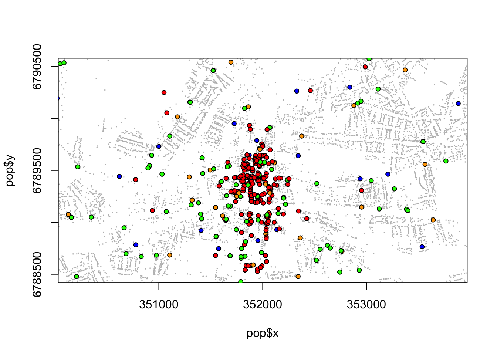
OK, notre carte n’a pas de légende (c’est possible mais vraiment compliqué en R-Base) mais on appréciera le fait d’avoir pu la réaliser en ne se servant que de quelques fonctions élémentaires de R comme
2.4 Diapos Rmd : Power Point killer
Lorsque l’on crée un fichier Markdown, on peut décider qu’il ne s’agit pas d’un document mais d’une présentation et opter pour l’un des deux modes par défaut appelés slidy et ioslides.
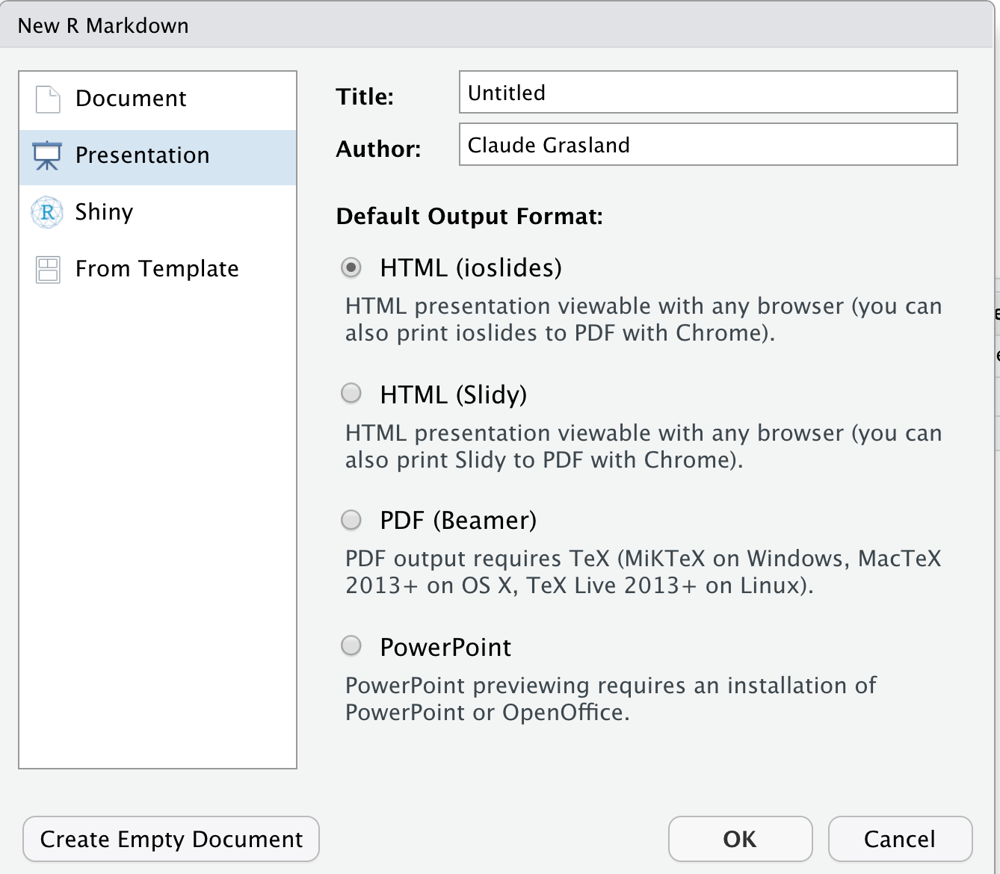
On peut ensuite créer un diaporama en donnant un titre général et en séparant chaque diapo par un titre de niveau 2 correspondant à des lignes débutant par ## comme dans l’exemple ci-dessous :
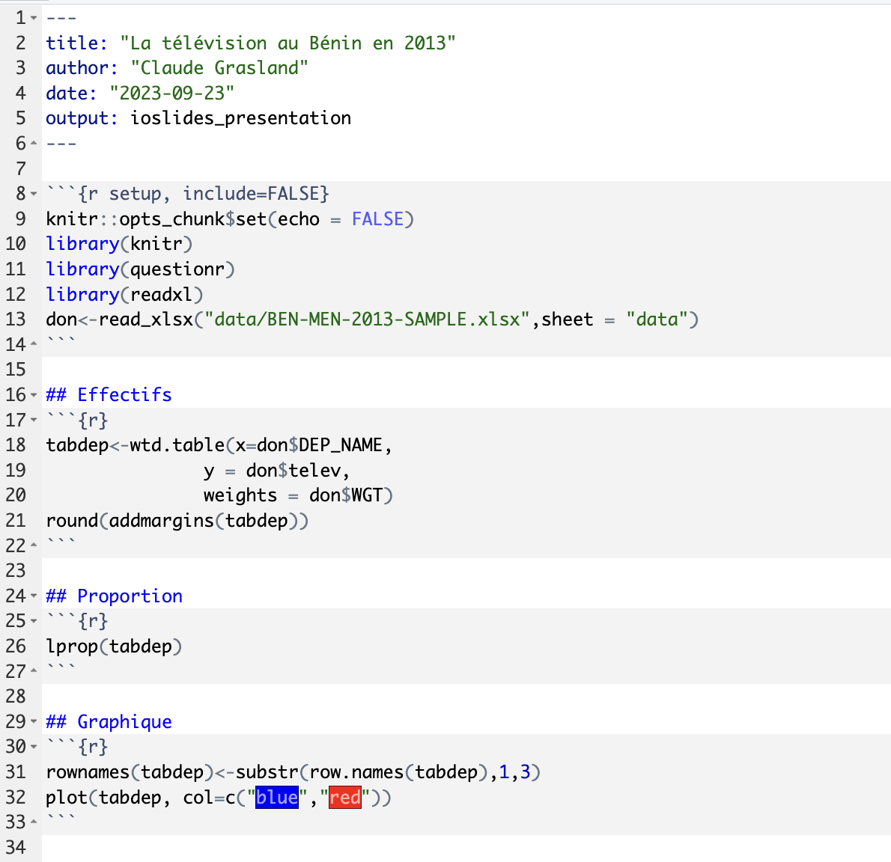
Il ne reste plus qu’à compiler le programme avec l’icône Knit (pelotte de laine) pour générer un document .html en forme de dipositives.
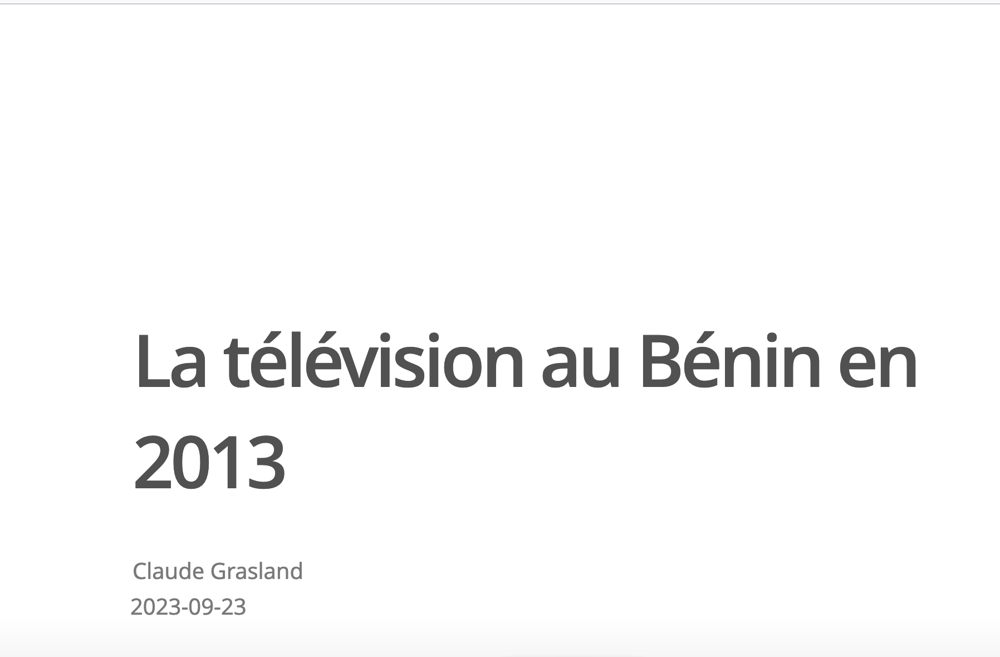
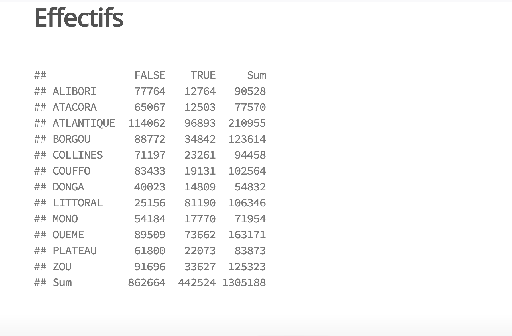
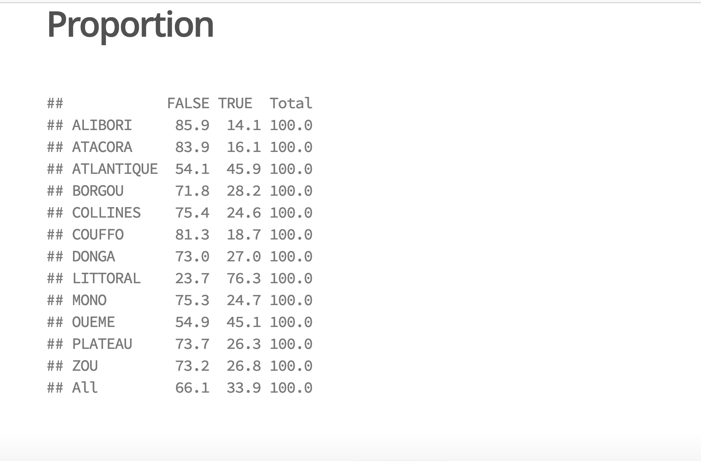
2.5 En résumé
R est un Excel killer mais aussi un Word killer voire un Power point killer… Adopter R peut nuire gravement à vos habitudes antérieures de travail.